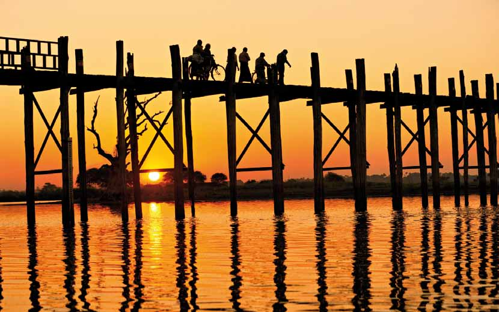

Hvorfor Myanmar?
Holder du af unaturligt smuk natur, bjerge, søer, rismarker, floder - og en befolkning af forunderlig elegance og mildhed, er rejser til Myanmar noget for dig. Horisonts rejser til Myanmar byder på det hele og er blandt vores gæsters absolutte favoritter.
Horisonts rejser til Myanmar giver dig et indblik i Myanmars kultur og forklarer landets særegne stil. Forklaringerne er mange. En væsentlig årsag ligger i burmesernes religiøse kulturarv, som du på vores rejser ser komme til udtryk i deres venlige og tilsyneladende fredfyldte livsstil.
Vælg din rejse med omhu - det fortjener du!
Rejselængder
12 - 15 dage
Vi tilbyder følgende ture i længden 12 - 15 dage:

Vejen til Mandalay
12-dages rundrejse til Myanmars største højdepunkter. På denne rundrejse oplever du højdepunkterne i dette smukke land: Mandalay, Bagan, sejltur på Ayeyarwadly-floden, den skønne Inle-sø og naturligvis hovedstaden Yangon.
Læs mere her

Burmas højdepunkter
På denne 14-dages rundrejse oplever du højdepunkterne i dette smukke land: Mandalay, Bagan, Sejltur på Ayeyarwadly-floden, den skønne Inle-sø, og naturligvis hovedstaden Yangon. Rundrejse med jeres egen guide og privat chauffør. Rejsen er tilrettelagt så I både har tid på egen hånd og med jeres guide.
Læs mere her

Det gyldne Burma
På denne rejse får du alle højdepunkterne - Mandalay, Bagan, Inle-Søen og Yangon - krydret med let vandring til de små landsbyer og besøg ved Golden Rock syd for hovedstaden Yangon. Med vores burmesiske specialguide får I stor indsigt i landets kultur og historie, helt tæt på burmeserne, der beredvilligt hilser jeg velkommen i deres smukke land.
Læs mere her
18 dage
Vi tilbyder følgende ture i længden 18 dage:

Myanmar rundrejse
Myanmar er det gyldne, glemte land. Turistens drømmerige med tusindvis af pagoder, orangeklædte munke og en smilende, venlig befolkning. På denne 18 dages rundrejse får du ud over højdepunkterne Mandalay, Bagan, Inle-Søen og Yangon en fascinerende tur til de etniske minoriteter i Shanstaten – langt væk fra andre rejsende i dette smukke land.
Læs mere her

Burmas hemmeligheder
På denne rejse kommer du til områder som har været lukket for rejsende i mere end 50 år. Den indtil nu helt isolerede delstat Rakhine i det nordvestlige hjørne af Burma rummer fantastiske uspolerede arkæologiske områder med hundredvis af templer og tusindvis af Buddhaer.
Læs mere her